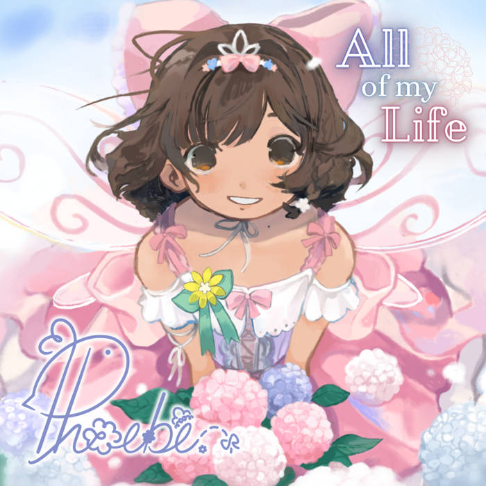

Miscellany
A collection of things I like, including my personal thoughts and history. They are all precious and important parts of my life!
Furcadia
Username: Sweetiepea
Favorite avatars: Jerbokin, Fleer, Kitsune
According to Furcadia's website, it is an Online Social Game (MMOSG). Gameplay includes walking around exploring user-created worlds called "dreams," roleplaying, and hanging out to chat with other players. It's been around since 1996, making it quite a long-running MMO with a currently small but dedicated userbase of mostly veteran players.
I started playing Furcadia November 2024 after reading about it on another website, and I was incredibly charmed by its dated quality; it very much appears as a relic of its time, and if I'd known about it as a child or teenager, I just know I would've been hooked. It's unique from any other live-service game I play, and I like that. Please feel free to whisper me in-game!
Phoebe

Meet Phoebe (aka Phoebe Chan, Feebeechanchibi), a 2.5D kaigai idol with sweet fairy-like vocals and a kind personality! She performs live on stage, streams as a VTuber, and voice acts. Her roles include Freya (ENG and JP) in Little Goody Two Shoes! Moon Garden is her debut EP, while All of My Life is her first full album of original songs.
Watching Phoebe perform live was actually my introduction to real idols (rather than fictional ones). I admire her for her work ethic and shining optimism that makes me want to be a kinder person. She's the one idol I would consider my "oshi," and I want everyone to know about her! Some of my favorite songs include Start Again, Evergreen Bloom, and Dream Quilt.